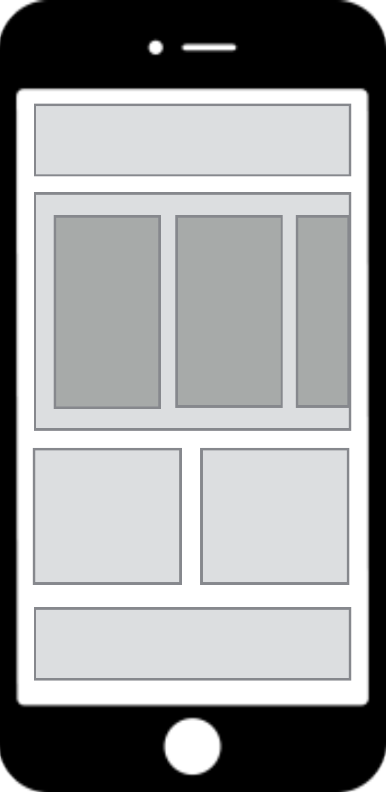

Jamkit 앱의 구조
Jamkit의 기본 사상

Jamkit은 앱을 카탈로그 책이라는 개념으로 다룹니다. 카탈로그 책의 목적은 콘텐츠와 데이터 (상품)를 사용자에게 효율적으로 전달하는 것입니다.
Jamkit 앱의 구성
Jamkit 앱은 독립적인 컴포넌트를 조합하여 구성됩니다.
- 컴포넌트는 레이아웃의 기본 구성 요소입니다.
- 컴포넌트는 데이터와 화면 (뷰), 스크립트, 그리고 독립된 컨텍스트로 구성됩니다.
- MVVM (Model-View-ViewModel) 패턴을 사용하여 화면과 데이터를 연결합니다.
- 컨텍스트 간에 데이터를 교환하는 작업은 마샬링이라고 부릅니다.
카탈로그

- 모든 리소스는 카탈로그 폴더에 위치합니다.
- 카탈로그는 여러 개로 구성할 수 있으며, 그중 MainApp 카탈로그는 필수입니다.
- 이미지는 Images, 동영상은 Videos, 오디오는 Audios 폴더에 위치하는 등, 각 리소스 타입별로 폴더 위치가 결정되어 있습니다.
- Android에서는 assets/catalogs 폴더 안에, iOS에서는 Catalogs.bundle 폴더 안에 카탈로그가 들어가야 합니다.
컴포넌트

- 앱은 독립적인 컴포넌트의 조합으로 구성됩니다.
- 컴포넌트는 레이아웃의 기본 구성 요소입니다.
- 컴포넌트는 데이터와 화면(뷰), 스크립트로 구성됩니다.
- 컴포넌트들은 서로 독립적이며, 별도의 컨텍스트를 가집니다. (Multi-Context)
멀티 컨텍스트 스크립트 엔진

컴포넌트의 스크립트 컨텍스트는 독립적입니다. 각 컴포넌트별로 독립적인 스크립트를 가지고 있으며, 컴포넌트 스크립트 사이의 통신을 위한 별도의 방법을 제공합니다.
- 각 컴포넌트는 자신만의 스크립트 컨텍스트를 가지고 있습니다.
- 스크립트의 컨텍스트가 모두 독립적이기 때문에 모듈별 개발이 용이합니다.
- SBML/SBSS 역시 독립적인 네임 스페이스를 가지고 있습니다.
Jamkit 런타임 아키텍처

Jamkit 시스템은 컨트롤러를 중심으로 위젯, 컨테이너, 시나리오 프로세서, 레이아웃 렌더러, 로컬 데이터베이스, 그리고 자바스크립트 엔진이 함께 연동되어 앱을 실행하도록 구성됩니다.